Colorizing the Prokudin-Gorskii glass plate collection — Tim, Fall 2026
Sergei Prokudin-Gorskii photographed the Russian Empire in color before color film existed,
by exposing three plates of the same scene through red, green, and blue filters.
Each digitized glass plate survives as one tall grayscale image — three stacked exposures, B/G/R top to bottom.
Pipeline: split each plate into equal thirds, then search for the (x, y) shift that best aligns G and R onto B —
exhaustively for small JPEGs, and via a coarse-to-fine image pyramid for the large TIFFs, so it stays fast.
Bells & whistles below build on top of that.
01
Single-Scale Alignment
The three low-resolution JPEGs are small enough (≤1024px) to align with a brute-force search:
try every integer shift (dx, dy) in a ±15px window and keep whichever scores best.
How a shift gets scored: NCC vs. L2
Both metrics are implemented (colorize.py's ncc() / ssd()),
scored on the interior 84% of the image so the plate border can't dominate the match:
L2 / SSD — sum((a − b)²), the raw sum of squared pixel differences.
Lower is better; treats every pixel equally and is thrown off by any overall brightness difference between channels.
NCC — sum( â · b̂ ) where â = (a − mean(a)) / ‖a − mean(a)‖ (same for b̂):
mean-subtract and unit-normalize both patches first, then dot them.
Higher is better, and because each patch is re-scaled to its own mean/variance,
NCC stays meaningful even when the two channels' brightness levels differ.
On these three JPEGs both metrics agree on every offset (the channels are close enough in brightness that it doesn't matter);
NCC is the default everywhere below since it's the one that keeps working once brightness actually diverges.
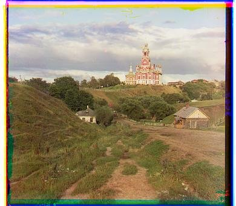
cathedral.jpgG(2,5) R(3,12)
monastery.jpgG(2,-3) R(2,3)
tobolsk.jpgG(3,3) R(3,6)
02
Multi-Scale Pyramid Alignment
The 11 full-resolution .tif scans are far too large (up to ~9600×3700px) for an exhaustive ±15px search —
at that size it's checking 31×31 shifts over millions of pixels, repeatedly,
and the true misalignment can be 100+ pixels anyway (see the offset table below), well past any small window.
Why coarse-to-fine, not just a bigger window
A recursive pyramid (own code — pyramid_align() calls itself; only the downsampling step uses a library resize)
halves the image with skimage.transform.rescale until it's under 256px,
aligns there with the same ±15px exhaustive search as §01,
then climbs back up: double the estimate for the next, twice-as-large level, and refine within just ±4px.
Halving the image also halves the true misalignment —
a 100px shift at full resolution is a ~3px shift after 5 halvings, well inside that ±15px search —
so the coarse level finds the right neighborhood cheaply,
and each finer level only has to correct the rounding from the level above it, not search from scratch.
Both NCC and L2 are implemented (see §01);
the pyramid results below use NCC on raw RGB pixel values, as the deliverable asks.
cathedral
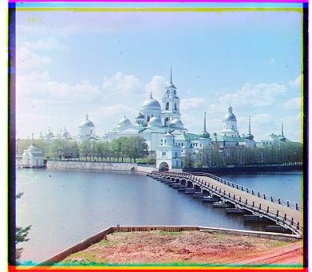
monastery
tobolsk
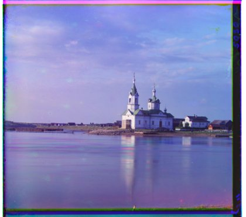
church
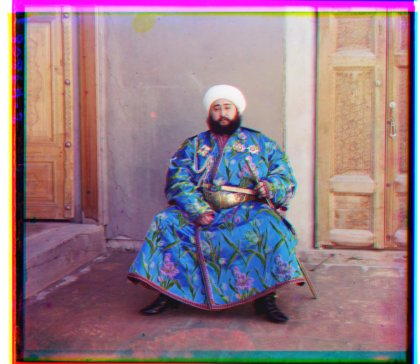
emir
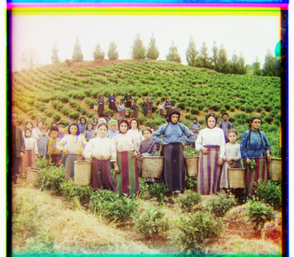
harvesters
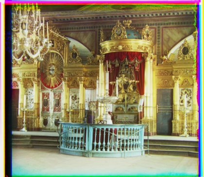
icon
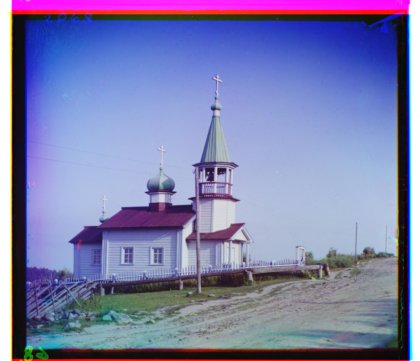
ilemselga
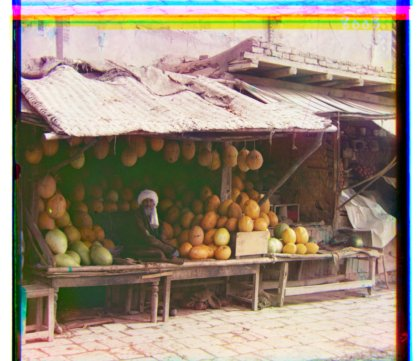
melons
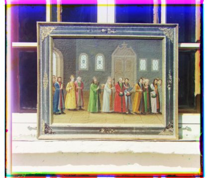
rel. painting
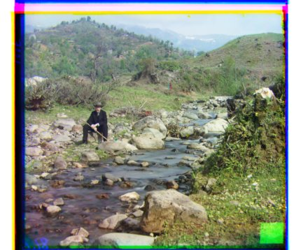
self portrait
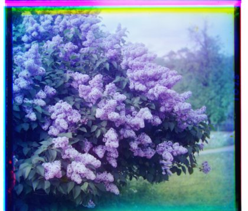
siren
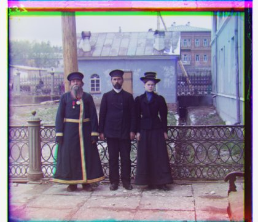
3 generations
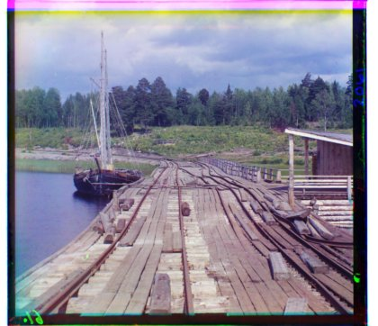
wharf
Every offset above lands in a plausible range and reproduces what an exhaustive search finds at full resolution —
no alignment defects across these 14, or across the 4 of my own in §03.
Computed displacement vectors, in (x, y) pixels, aligning G and R onto B
Plate
Method
G offset
R offset
cathedral.jpg
single-scale
(2, 5)
(3, 12)
monastery.jpg
single-scale
(2, -3)
(2, 3)
tobolsk.jpg
single-scale
(3, 3)
(3, 6)
church.tif
pyramid
(4, 25)
(-4, 58)
emir.tif
pyramid
(24, 49)
(56, 104)
harvesters.tif
pyramid
(17, 60)
(13, 124)
icon.tif
pyramid
(17, 41)
(23, 89)
ilemselga.tif
pyramid
(7, 40)
(11, 130)
melons.tif
pyramid
(10, 82)
(13, 178)
religous_painting.tif
pyramid
(3, 28)
(7, 68)
self_portrait.tif
pyramid
(29, 79)
(36, 176)
siren.tif
pyramid
(-6, 49)
(-25, 96)
three_generations.tif
pyramid
(14, 53)
(11, 112)
wharf.tif
pyramid
(-7, 15)
(-16, 83)
The thumbnails above are the plain aligned baseline, as the deliverable asks for.
For the polished version of all 18 plates — these 14 plus the 4 of my own in §03,
each with auto-crop, white balance, and contrast applied — see the
full color gallery.
03
My Own Plates
Four more plates I picked from the
Library of Congress collection
(not in the provided set), run through the full pipeline — pyramid alignment plus every bells & whistle below.
A village and monastery church across a field. G(1,5) R(1,10).
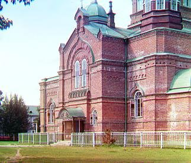
A brick church facade. G(2,-11) R(4,-6).
A hazy aerial city view. The magenta blob in the sky is dust/damage on the G plate, not a misalignment — the B and R thirds are clean there. G(2,6) R(3,12).
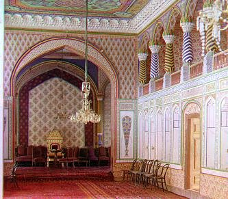
An ornate palace interior. G(-1,2) R(-3,6).
04
Bells & Whistles
The 5 required extensions: auto-crop, auto-contrast, auto white balance, better color mapping, better features.
Each is shown in isolation against the same plain aligned baseline.
4.1
Automatic Cropping
Detects the plate border instead of cutting a fixed margin,
scanning inward from each edge until a row/column looks like real content.
Four signals feed the decision:
pixel clipping (the scanned frame is often saturated — a clipped magenta strip reads R=1, B=1 exactly),
absolute darkness (a mean brightness alone below a low threshold, regardless of texture),
channel disagreement (R/G/B agree inside a well-aligned photo, not at the edge),
and flat-and-extreme (a uniform strip near pure black/white).
An earlier version used channel disagreement alone and cropped away a real blue sky,
since natural color also "disagrees" across channels — adding the clipping signal and requiring extremeness fixed it.
A later pass added the darkness signal on its own: some black borders carry enough scanner grain
to dodge the flatness check even though they're unmistakably a border, not scene content —
icon.tif had a ~130px black band on its left edge that survived every other signal
until darkness was checked without also requiring flatness.
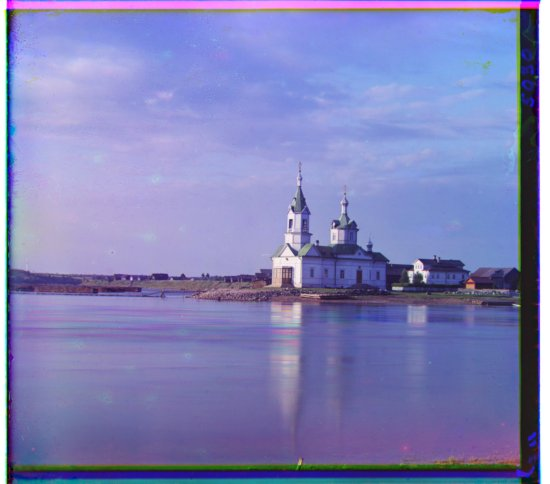
beforeuncropped
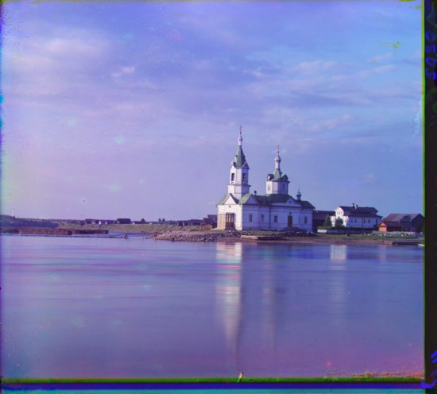
afterauto-cropped
4.2
Automatic Contrast
Atmospheric haze scatters light into every part of a distant scene,
lifting the shadows and compressing everything into a narrow, washed-out middle range —
the plate never gets a real black or a real white.
auto_contrast() does a per-channel percentile stretch:
the 0.5th percentile maps to 0 and the 99.5th to 1,
so whatever dark-to-bright range each channel actually uses fills the full range.
Percentiles rather than the literal min/max pixel, so a couple of scanner dust specks can't skew the whole channel.
On the hazy city plate below, the channels only spanned roughly
[0.30, 0.97] (R), [0.11, 0.94] (G), [0.18, 0.94] (B) before the stretch,
none of them got anywhere near true black or white,
and after, all three span essentially the full [0, 1].
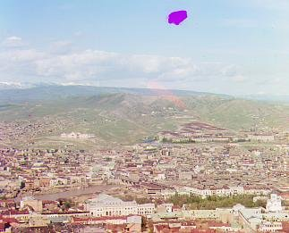
beforehazy, flat
afterstretched
4.3
Automatic White Balance
Two illuminant estimators are implemented.
Gray-world (the default, shown below) assumes the scene averages out to neutral gray
and scales each channel so their means match.
White-patch instead assumes the single brightest surface in the scene is meant to be white,
and scales channels so the 99th-percentile pixel hits 1.0. White-patch is
better when there's a genuinely white/bright reference object in frame,
but easily thrown off by one stray specular highlight or dust speck,
so gray-world (an average over the whole scene, less sensitive to any one pixel) is the safer default.
This plate has a strong blue color cast (before: R≈0.38, G≈0.45, B≈0.61 on average);
gray-world pulls all three to the same mean, warming the whole image and reducing the cast.
beforeblue cast
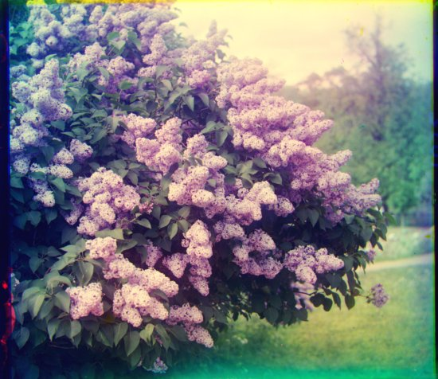
aftergray-world
4.4
Better Color Mapping
There's no reason the plate's red/green/blue filters should map exactly onto sRGB's R/G/B primaries.
A plate's three channels are highly correlated (mostly all just measuring brightness),
so a per-channel stretch barely touches the real color signal.
I implemented a function that computes the principal components of the pixel color distribution
via eigendecomposition of the 3×3 color covariance matrix,
stretches each component toward a shared target variance, then rotates back to RGB.
strength (0–1, default 0.45) blends each component's scale between
"leave it alone" and "fully equalize," rather than always fully equalizing:
a full stretch reliably blows out any plate with real saturated color already in it into something neon.
Below is the same lilac plate used in §4.3's white-balance example. We observe that the after picture has
more realistic and saturated colors without needing white balance.
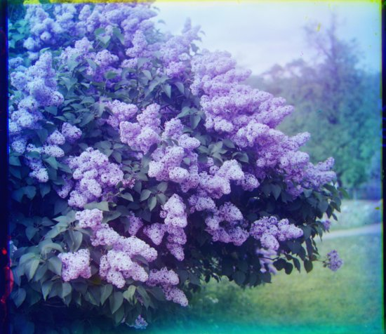
beforedirect RGB
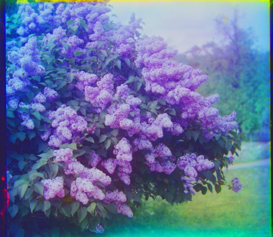
afterdecorrelation stretch
4.5
Better Features for Alignment
The spec mentions emir.tif has three exposures that have different brightness levels,
so raw-pixel NCC gets confused about what "matches" and it finds a shift that's close but not exact.
Switching the alignment metric to score on gradient magnitude
(np.gradient → np.hypot(gx, gy), computed once per pyramid level
and rolled along with the search) instead of raw pixels fixes this:
edges (a robe's outline, a doorway) still line up across channels even when overall brightness doesn't.
We notice better edge alignment on the after photo. Specifically, the patterns of the robe look way sharper.